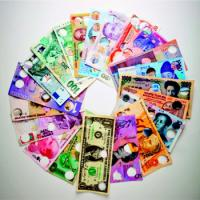
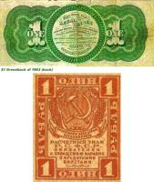

Появление бумажных денег в истории человечества

Точная дата появления первых бумажных денег неизвестна. Первопричина появлению бумажных платежных средств была необходимость длительного сохранения и долговечности их единиц. Важным критерием послужило удобство использования денег и их свойство делиться на более мелкие части. Когда возникли металлические деньги, они уже стали предпосылкой в появлении бумажных денег. Родиной бумажной валюты считается Китай, где была изобретена первая бумага. Первые монеты стали, в прямом смысле этого слова, тяжелой ношей для их хозяев. В последствии монеты стали оставлять на хранение в специальных заведениях (прототипы первых банковских учреждений) под письменную расписку – «письменное обещание». Такого рода документы получили широкое распространение даже на государственном уровне. Еще одной причиной перехода на бумажные деньги стала острая нехватка металла, связанная с развитием горнодобывающей отрасли. В общем, потребность в деньгах назревала давно, так как экономика не стояла на месте. Таким образом, и появились первые бумажные купюры. В Россию первые деньги попали в связи с их быстрым и широким распространением в Европе. Их использовали под названием «ассигнация». С появлением новых видов денег возникла необходимость у правительств передовых государств нуждаться в больших деньгах.Причины появления интереса к бумажным деньгам.
Появлению бумажных денег сопутствовало поднятие уровня развития экономики стран мира. Бумажные деньги не в такой степени долговечны, как, например, металлические. Главным их достоинством является удобство и быстрота их изготовления, взаимозаменимость износившихся купюр и новых. Банкноты – денежное средство очень удобное в обращении, по сравнению с монетами. Одной из значительных проблем функционирования бумажных единиц в государстве является возможная эмиссия (выпуск банкнот, не подтвержденных золотым запасом страны). Бумажные платежные средства в финансовом обороте государства должны быть ограничены в количестве. На современном этапе развития мировой денежной системы оптимальным решением во избежании эмиссии считается кредитование (кредитные ресурсы). Бумажная валюта всегда имела внешний вид, который требовал постоянных изменений. Но неизменными атрибутами денежных купюр являются: индивидуальный номер, защитные детали от подделки (водяные знаки, особая бумага). Бумажные купюры – это оригинальный документ эпохи, исторический документ того или иного государства и мира в целом. Это документальное свидетельство политических, экономических, финансовых событий в мировой истории.Первые бумажные деньги были примитивными.

Бумажные расписки и векселя в обязательном порядке принимались как деньги. Проблемой стал обмен монет на бумажные деньги такого рода. Срабатывал и психологический фактор: население выражало высокую степень настороженности и недоверия к бумажным деньгам, нежели к привычным и надежным металлическим денежным единицам. Поэтому металлическая валюта оценивалась дороже, чем хрупкая «бумажка». Это привело к конкуренции между этими видами платежных средств. Историко-экономический фактор сыграл свою роль в России: резкое падение ценности серебра привело к более активному распространению интереса к бумажным деньгам. Выпуск бумажных денег в США связан с подготовкой страны к Гражданской войне. Они назывались «гринбэками». Это был первый тип бумажной валюты в Америке. В Советском государстве с бумажными деньгами ознаменовался выпуск «совзнаков», на которых не было не подписей, ни печатей, только номинал. В период Великой Отечественной войны отмечалась стабильность денежной системы. В условиях военного времени граждане использовали карточки для получения продовольственных и промышленных товаров. При этом государство устойчиво держало уровень цен. В этот период активно распространялись «фальшивки», что негативно повлияло на денежную систему в целом.

Бумажные деньги их реальная стоимость в современной экономике.